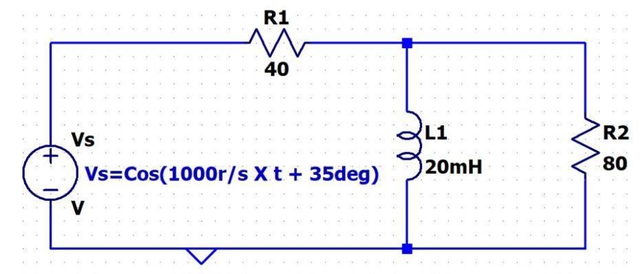

Question 2
You MUST use the node voltage method to analyze the following circuit (X is multiplication). You may assume the inductor is ideal (e.g. no series resistance). Don't forget your units.

2A) Draw the Phasor Diagram of this circuit (There is a big point penalty for not having all these elements clearly on your diagram).
1) Replace the components with the values of impedance.
2) Replace the source with the appropriate phasor notation in Cartesian representation.
3) I identify the node(s) where you will perform nodal analysis. Label it/them as Va, Vb, Vc.... etc. It could be one node, it could be two nodes, it could be more; it is your decision based on the circuit.
4) At each node(s) identified in part 3. Draw the current arrows that you wish to use in your analysis. Clearly show the direction and label them i1, i2, i3, etc....)
Note: You are not required to enter any information into Canvas for 2A as it can't ingest graphics.
2B) For each node where you will perform nodal analysis as identified in your diagram (e.g. Va, Vb, etc...) state the current equation(s).
Note: You are not required to enter any information into Canvas for 2B as it can't ingest equations.
2C) Write the raw nodal equation associated with each current equation (at each node Va, Vb, Vc, etc....). Your source in the equation should be expressed as a phasor not a variable. DON'T DO ANY SIMPLIFICATION YET.
Note: You are not required to enter any information into Canvas for 2C as it can't ingest equations.
2D) Mathematically simplify the Nodal equation(s) to find the Phasor Representation of Va, or Va, Vb, Vc if there are multiple nodes. (Cartesian). You must do this by hand showing every step of your algebra. You may only use your calculator for arithmetic.
2E) Write the Steady State Time Domain Expression for Va, or Va, Vb, Vc if there are multiple nodes.
Note: You are not required to enter any information into Canvas for 2E as it can't ingest equations.
2F) Determine the Phasor for the Current in the 40 Ohm Resistor (Polar Format)
2G) Determine the Power Factor of the Source
2H) Determine the Average Power dissipated in the 80 ohm Resistor
2I) Determine the RMS Voltage of the magnitude of Va